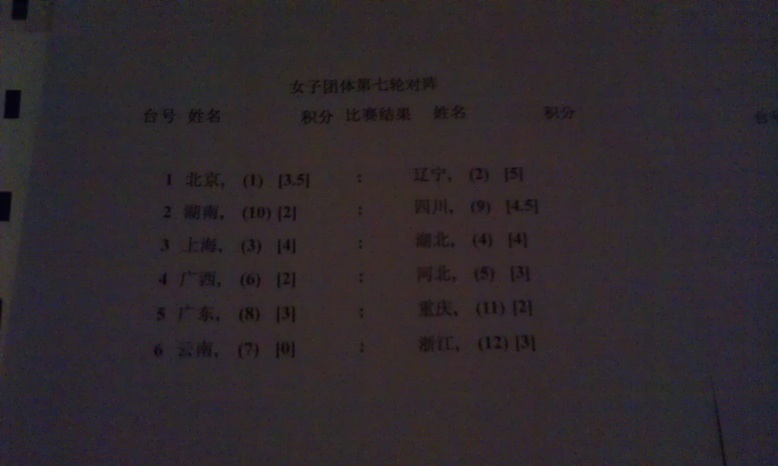
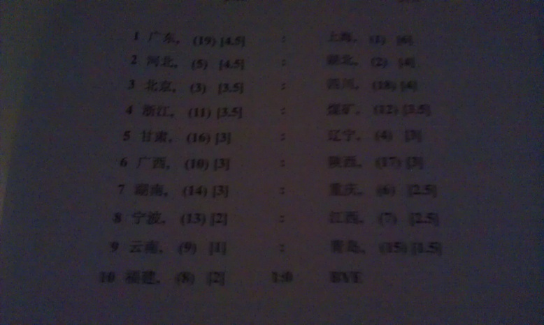
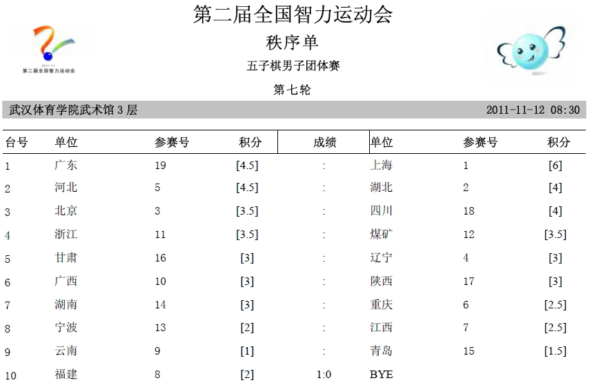
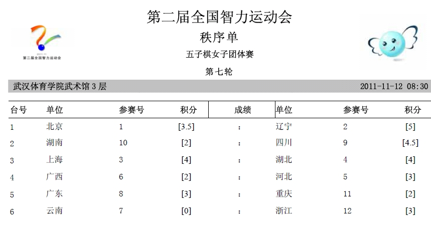

请问，团体赛第6轮的成绩以及第7轮对阵呢？
首页
全国智运会专题
#1 请问，团体赛第6轮的成绩以及第7轮对阵呢？ 作者：没事摆石子玩 发表时间：2011-11-11 18:09:43
RT，应该已经结束了吧 请裁判长发出来好吗 不要因为对19手事件的争论，影响到正常的消息发布［此帖子已被 没事摆石子玩 在 2011-11-11 18:12:37 编辑过］
［ 陈唯一 于 2011-11-11 18:27:16 时花250金币拍了你一板砖］
［ 傀儡 于 2011-11-11 19:15:10 时花20金币送鲜花一朵］
#2 Re:请问，团体赛第6轮的成绩以及第7轮对阵呢？ 作者：润本 发表时间：2011-11-11 18:37:08
关注中，请知情人士及时报料！
#3 Re:请问，团体赛第6轮的成绩以及第7轮对阵呢？ 作者：没事摆石子玩 发表时间：2011-11-11 18:38:07
陈唯一你脑袋残疾了？ 这种帖子你还乱砸 跟疯狗一样。要你出来比你又没种 别跟个太监一样行么 ［ 一侠客一 于 2011-11-11 18:39:22 时花20金币送鲜花一朵］
［ 陈唯一 于 2011-11-11 19:16:57 时花50金币砸了你一个臭鸡蛋］
#4 Re:请问，团体赛第6轮的成绩以及第7轮对阵呢？ 作者：掌棋如烟 发表时间：2011-11-11 18:41:32
请看楼下。。。
［此帖子已被 掌棋如烟 在 2011-11-11 18:44:31 编辑过］
#5 Re:请问，团体赛第6轮的成绩以及第7轮对阵呢？ 作者：湮落梓涵 发表时间：2011-11-11 18:43:30
对阵表已经贴在蓝天蓝宾馆了貌似
#6 Re:Re:请问，团体赛第6轮的成绩以及第7轮对阵呢？ 作者：超级小老虎 发表时间：2011-11-11 18:47:18
干好你的本职工作先！
第四轮的时候你是不是诅咒错人了？
#7 Re:请问，团体赛第6轮的成绩以及第7轮对阵呢？ 作者：第五象限 发表时间：2011-11-11 18:48:49
哪个好心人说下辽宁女与湖北的结果
#8 Re:请问，团体赛第6轮的成绩以及第7轮对阵呢？ 作者：魔铃 发表时间：2011-11-11 18:52:28


不太清楚 将就看吧
［ 第五象限 于 2011-11-11 18:54:39 时花20金币送鲜花一朵］
［ 没事摆石子玩 于 2011-11-11 18:54:48 时花20金币送鲜花一朵］
［ 没事摆石子玩 于 2011-11-11 18:55:05 时花20金币送鲜花一朵］
［ 傀儡 于 2011-11-11 19:14:44 时花20金币送鲜花一朵］
［ 傀儡 于 2011-11-11 19:14:49 时花20金币送鲜花一朵］
［ 傀儡 于 2011-11-11 19:14:54 时花20金币送鲜花一朵］
［此帖子已被 有志青年 在 2011-11-12 12:03:33 编辑过］
#9 Re:请问，团体赛第6轮的成绩以及第7轮对阵呢？ 作者：湮落梓涵 发表时间：2011-11-11 18:57:19
第六轮湖北女队胜
#10 Re:请问，团体赛第6轮的成绩以及第7轮对阵呢？ 作者：掌棋如烟 发表时间：2011-11-11 18:58:06
我使劲看一下楼上，是女子的
北京3.5――辽宁5
湖南2――四川4.5
上海4――湖北4
广西2――河北3
广东 ――重庆
云南――浙江
看不太清楚，可能有错
［ 一侠客一 于 2011-11-11 19:13:08 时花20金币送鲜花一朵］
#11 Re:请问，团体赛第6轮的成绩以及第7轮对阵呢？ 作者：小丸.net 发表时间：2011-11-11 19:05:39


［ 一侠客一 于 2011-11-11 19:12:45 时花20金币送鲜花一朵］
［ 傀儡 于 2011-11-11 19:16:27 时花20金币送鲜花一朵］
［ 傀儡 于 2011-11-11 19:16:31 时花20金币送鲜花一朵］
#12 Re:请问，团体赛第6轮的成绩以及第7轮对阵呢？ 作者：第五象限 发表时间：2011-11-11 19:16:50
如果辽宁最后一轮被逼平 而四川取胜 似乎对手分相同 而要比较中间对手分 那么中间对手分是怎么定义的？除去第一轮最后一轮的对手以外的对手分？
#13 Re:请问，团体赛第6轮的成绩以及第7轮对阵呢？ 作者：没事摆石子玩 发表时间：2011-11-11 19:20:28
看看 ，说你太监你还真一直当太监 连个P都不放砸一个鸡蛋 有P用啊 掩饰得了你的胆怯么 陈唯一？
#14 Re:请问，团体赛第6轮的成绩以及第7轮对阵呢？ 作者：三道 发表时间：2011-11-11 19:24:11
问，于亚君和黄琼莹的结果。
#15 Re:请问，团体赛第6轮的成绩以及第7轮对阵呢？ 作者：宝马1 发表时间：2011-11-11 21:11:54
棋品见人品，要赢得起，不骄不躁，谦虚谨慎。也要输得起，定位自己，正视现实。比赛很快就会过去，一后的日子还会很长，谁之过，有验证错误的时间，也有纠正错误的机会，是非自有评说，要有常态之心！
#16 Re:请问，团体赛第6轮的成绩以及第7轮对阵呢？ 作者：徐来 发表时间：2011-11-12 7:57:35
 煤矿加油加油
煤矿加油加油